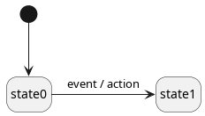
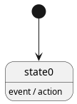
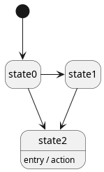
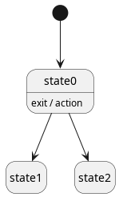

Definition
There are several types of actions:
- state transition actions;
- internal actions;
- entry actions;
- exit actions.
State transition action
A state transition action, as its name suggests, is associated to a state transition. Such an action is executed whenever the associated state transition occurs.
In the following diagram, action is executed whenever the state machine transitions from state0 to state1 (because event occurs):

A state transition action
Internal action
An internal action is associated to a state and an event. Such an action is executed whenever the associated event occurs while the associated state is active.
In the following diagram, action is executed whenever event occurs while state0 is active.

An internal action
Entry action
An entry action is associated to a state. Such an action is executed whenever the state machine enters the associated state.
In the following diagram, action is executed whenever the state machine enters state2, whatever the source state (here state0 or state1):

An entry action
Exit action
An exit action is associated to a state. Such an action is executed whenever the state machine exits the associated state.
In the following diagram, action is executed whenever the state machine exits state0, whatever the target state (here state1 or state2):

An exit action
When to use which type of action
Internal actions is the only type of action that can be executed without a state transition. A set of internal actions expresses "when this state is active, here are the actions that must be executed for these types of event". In this aspect, the state machine is basically an implementation of the strategy pattern.
When you want to execute an action during a state transition however, you have several choices.
- Entry/exit actions being associated to a specific state, they are well suited for: ** the initialization/deinitialization of the state (e.g. allocation/deallocation of resources, start/stop of timer to implement a timeout, etc.); ** calling functions that are semantically associated with the state name (e.g.
start_motor()/stop_motor() for a state named running_motor).
- State transition actions are well suited for executing functions that have more to do with the specific transition it's associated to than with the source or target state.
How to use actions within AweSM
There are two ways to define and associate an action:
- within the transition table (possible for state transition actions and internal actions);
- within the associated state (possible for internal actions, entry actions and exit actions).
Within the transition table
The action is the fourth (optional) parameter of awesm::transition. In this context, AweSM expects the name of a non-member function with one of the following signatures (in this order of priority):
void(machine_type& mach, context_type& ctx, const event_type& evt);
void(context_type& ctx, const event_type& evt);
void(context_type& ctx);
void();
What determines the type of the action (between a state transition action or an internal action) is the target state (the third parameter) of the awesm::transition instance:
- if the target state is
awesm::null, the action is an internal action;
- if the target state is a valid state, the action is a state transition action.
Note: A transition without target state is called an internal transition. No state exit or entry happen in this case.
Here is an example of two actions, with their definition and their association with a transition:
void some_action()
{
std::cout << "Executing some action...\n";
}
void some_other_action(context& , const some_other_event& event)
{
std::cout << "Executing some other action (some_other_event{" << event.value << "})...\n";
}
::add<state0, some_event, state1, some_action >
::add<state0, some_other_event,
awesm::null, some_other_action >
::add<state0, yet_another_event, state2>
::add<state1, yet_another_event, state2>
::add<state2, yet_another_event, state0>
;
A null event or target state.
Definition: transition_table.hpp:52
Represents a transition table.
Definition: transition_table.hpp:105
Within the associated state
To associate an action to a state, you have to set an option of the configuration (see awesm::state_conf_tpl) of that state:
- for an entry action, set the
on_entry_any option;
- for an internal action, set the
on_event option (or alternatively the on_event_auto option);
- for an exit action, set the
on_exit_any option.
By setting these options, you require awesm::machine to call a specific member function of the associated state. These are the accepted names and signatures:
void on_entry(machine_type& mach, const event_type& event);
void on_entry(const event_type& event);
void on_entry();
void on_event(const event_type& event);
void on_exit(machine_type& mach, const event_type& event);
void on_exit(const event_type& event);
void on_exit();
Note: All other cases lead to a compilation error.
Here is a state that defines and associates all three types of actions:
struct state2
{
::on_entry_any
::on_event<some_event, some_other_event>
::on_exit_any
;
void on_entry(const some_other_event& event)
{
std::cout << "Executing state2 entry action (some_other_event{" << event.value << "})...\n";
}
void on_entry()
{
std::cout << "Executing state2 entry action...\n";
}
void on_event(const some_event& )
{
std::cout << "Executing state2 some_event action\n";
}
void on_event(const some_other_event& event)
{
std::cout << "Executing state2 some_other_event action (some_other_event{" << event.value << "})...\n";
}
void on_exit()
{
std::cout << "Executing state2 exit action...\n";
}
};
Definition: state_conf.hpp:21
Example
Here is a test program for all the actions we've defined in this chapter:
#include <awesm.hpp>
#include <iostream>
struct context{};
struct some_event{};
struct some_other_event
{
int value = 0;
};
struct yet_another_event{};
struct state2
{
::on_entry_any
::on_event<some_event, some_other_event>
::on_exit_any
;
void on_entry(const some_other_event& event)
{
std::cout << "Executing state2 entry action (some_other_event{" << event.value << "})...\n";
}
void on_entry()
{
std::cout << "Executing state2 entry action...\n";
}
void on_event(const some_event& )
{
std::cout << "Executing state2 some_event action\n";
}
void on_event(const some_other_event& event)
{
std::cout << "Executing state2 some_other_event action (some_other_event{" << event.value << "})...\n";
}
void on_exit()
{
std::cout << "Executing state2 exit action...\n";
}
};
void some_action()
{
std::cout << "Executing some action...\n";
}
void some_other_action(context& , const some_other_event& event)
{
std::cout << "Executing some other action (some_other_event{" << event.value << "})...\n";
}
::add<state0, some_event, state1, some_action >
::add<state0, some_other_event,
awesm::null, some_other_action >
::add<state0, yet_another_event, state2>
::add<state1, yet_another_event, state2>
::add<state2, yet_another_event, state0>
;
struct machine_def
{
using conf = awesm::machine_conf
::transition_tables<transition_table_t>
::context<context>
;
};
int main()
{
auto machine = machine_t{};
machine.process_event(some_event{});
machine.process_event(some_event{});
machine.process_event(yet_another_event{});
machine.process_event(some_other_event{1337});
machine.process_event(yet_another_event{});
return 0;
}
The state machine implementation template.
Definition: machine.hpp:51
void process_event(const Event &event)
Processes the given event.
Definition: machine.hpp:290
The output of this program is the following:
Executing some other action (some_other_event{42})...
Executing some action...
Executing state2 entry action...
Executing state2 some_other_event action (some_other_event{1337})...
Executing state2 exit action...
 1.9.6
1.9.6